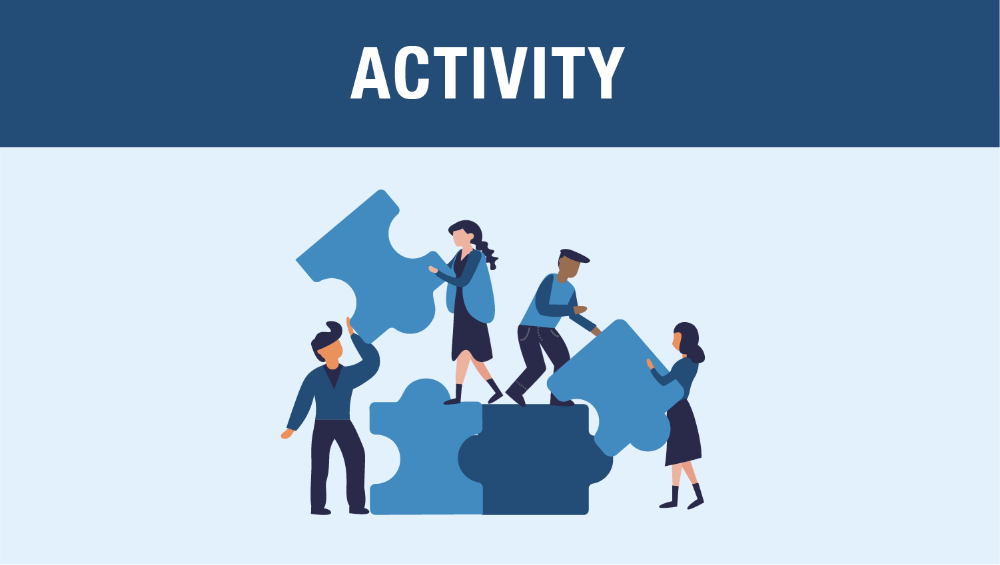
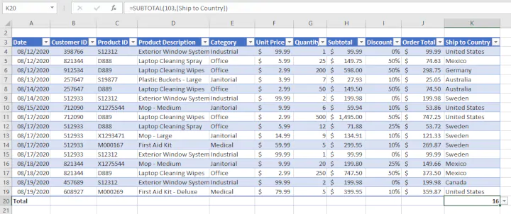

¿Qué es la visualización de datos?
IN2039: Visualización de Datos
Agenda
Ciencia de datos
Los 3 principios de visualización
- Actividad

Introducción a Ciencia de Datos
La ciencia de datos es …
un campo multidisciplinario que utiliza métodos, procesos, algoritmos y sistemas científicos para extraer conocimientos e ideas de muchos datos estructurados y no estructurados.
. . .

El esquema de ciencia de datos

Provost, F., & Fawcett, T. (2013). Data Science for Business: What you need to know about data mining and data-analytic thinking. O’Reilly Media, Inc.
Business understanding
La comprensión empresarial se refiere a definir el problema empresarial a resolver.
El objetivo es reformular el problema empresarial como un problema de ciencia de datos.
A menudo, reformular el problema y diseñar una solución es un proceso iterativo.
Data understanding
- Si el objetivo es resolver un problema empresarial, los datos que componen la materia prima disponible a partir de la cual se construirá la solución.
Los datos disponibles rara vez coinciden con el problema.
Por ejemplo, los datos históricos a menudo se recopilan con fines no relacionados con el problema empresarial actual o sin ningún propósito explícito.
. . .
Nuestro objetivo es convertir los datos en información que contesten preguntas útiles.
Tipos de datos
Texto

Imágenes
Video
Audio

Datos númericos
La metodología de ciencia de datos esta basada en datos númericos dados en tablas.

De hecho, los textos, imágenes, videos o audios son transformados a este formato para procesarlos.
. . .
En este curso, asumiremos que los datos están en una tabla.
Mas importante, asumiremos que los datos han sido limpiados y no contienen typos o observaciones extrañas.
La Situación Problema
La inseguridad alimentaria en México es un problema persistente que afecta a una proporción significativa de la población.
Este fenómeno se caracteriza por la falta de disponibilidad y acceso regular a alimentos nutritivos y suficientes, lo que impacta negativamente en la salud y el bienestar de los individuos.
Objetivo de la situación problema
Esta situación problema concierne la creación de un póster que informe a la sociedad sobre el estatus de inseguridad alimentaria que existe en México.
Para esto, usarás una base de datos con información de 63,855 viviendas y 15 variables que se encuentra en el archivo “IngresosViviendasMexicanas.xlsx.”
Puedes encontrar más información en nuestra página de Canvas.
Los 3 principios de la visualización de datos
¿Qué es la visualización de datos?
“Una visualización [de datos] es cualquier presentación visual destinada a revelar evidencia, haciendo visible lo invisible” Alberto Cairo (2015).


En esencia, una visualización de datos te permite profundizar en conjuntos de datos complejos para obtener información significativa mediante el uso de pantallas gráficas.
Las visualizaciones de datos se ocupan principalmente de proporcionar evidencia y permitir que la audiencia explore y llegue a sus propias conclusiones sobre lo que las visualizaciones revelan sobre los datos.
. . .
La visualización de datos tiene 3 principios…
As data scientists, we create data visualizations in order to understand our data and explain our analyses to other people. A plot should have a message, and it’s our job to communicate this message as clearly as possible.
Principio 1: Formula el mensaje o pregunta
Formúla la pregunta de interés o el mensaje que quieres transmitir.


El mensaje puede ser una pregunta
¿Cuál es la comparación importante?
¿Cómo la enfatizamos?
Do you have reason to expect that one group/observation might be different?
Why might your finding about shape matter?
What additional comparison might bring added value to the investigation?
Are there any potentially important features to create comparisons with/against?
[Incluir noticias del new york times]
Principio 2: Transforma los datos en información
Tu gráfica debe de usar los datos para transmitir el mensaje o contestar la pregunta. Es decir, debe de transformar los datos en información.
Enriquece tu gráfica con símbolos de color y texto para transmitir información adicional.
Principio 3: Aplica los principios del diseño gráfico
- Es fácil identificar objetos por color.
- Utiliza etiquetas directas en lugar de una leyenda.
- Elementos como texto, líneas, y formas que tengan la misma naturaleza deben parecerse.
- Equilibra gráficos y texto.
- Ten cuidado con las opciones predeterminadas del software de visualización.
- Usa un diseño de cuadrícula para organizar su visualización.
No te limites a cosas simples. Enriquece tu gráfica con símbolos de color para transmitir información adicional. Si es posible, agrega contexto con marcadores y etiquetas de referencia.
También, agrega una leyenda a la gráfica que describa las características importantes y resuma sus conclusiones.
Ejemplo
Principio 1: Es más barato tomar Uber que poseer un auto en cuatro de las cinco ciudades más grandes de USA.
| Ciudad | Uber | Auto |
|---|---|---|
| New York City | 142 | 218 |
| Washington D.C. | 96 | 130 |
| Chicago | 77 | 116 |
| Los Angeles | 62 | 89 |
| Dallas | 181 | 65 |

The estimated costs are based on a twice-daily 10.4 mile one-way commute at peak times over the course of a week using either the UberPool option (where available) or alternatively UberX vs the cost of using a personal vehicle (including any associated costs of ownership). Study conducted in February 2017.
Principio 2: Transforma los datos en información.
Principio 3: Aplica los principios del diseño gráfico.
“El mayor valor de una imagen es cuando nos obliga a notar lo que nunca esperábamos ver.” John W. Tukey.

. . .
https://www.storytellingwithdata.com/ es una excelente guía sobre visualizaciones.
Principios del diseño gráfico
Es más fácil identificar objetos por color que por forma.
Cuando sea posible, utiliza etiquetas directas en lugar de una leyenda.
Elementos como texto, líneas, formas, etc., que tengan la misma naturaleza deben parecerse.
Haz un esfuerzo por lograr un equilibrio entre gráficos y texto.
Ten cuidado con las opciones predeterminadas del software de visualización.
Utiliza un diseño de cuadrícula para organizar su visualización.
Actividad
Actividad (cooperative mode)
- Júntate con un compañero.
- Encuentren un buen y un mal ejemplo de una visualización (gráficas) en linea.
- Guarden las visualizaciones (por ejemplo, haciendo una captura de pantalla).
- Escriban una crítica breve (3 a 4 enunciados) de cada visualización.
- Suban un documento con sus criticas e imágenes en Canvas.